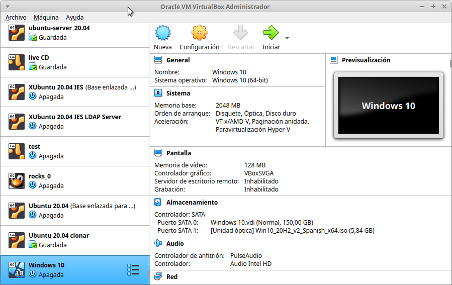

Maquinas Virtuales#
Una máquina virtual es un software que emula a un ordenador completo, es decir, que puede hacerse pasar por otro dispositivo -como un PC- de tal modo que puedes ejecutar otro sistema operativo en su interior. Tiene su propio disco duro, memoria, tarjeta gráfica y demás componentes de hardware, aunque todos ellos son virtuales.
Que sus componentes sean virtuales no quiere decir necesariamente que no existan. Por ejemplo, una máquina virtual puede tener unos recursos reservados de 2 GB de RAM y 20 GB de disco duro, que salen del PC donde está instalada la máquina virtual
Hay varias aplicaciones muy conocidas capaz de hacer esto, aunque las más famosas son VMWare, VirtualBox, QEMU , etc..
En clase utilizaremos VirtualBox:
Resumen:
OVF/OVA : es un estándar abierto para empaquetar y distribuir un dispositivo virtual que consta de una o varias máquinas virtuales (VM).
Clonación completa, una copia exacta (incluyendo todos los archivos de disco duro virtual) de la máquina original serán creados.
Clonación enlazada, una nueva máquina será creada, pero los archivos de las unidades de disco duro virtuales serán vinculados a los archivos de disco duro virtual de la máquina original y no podrá mover la nueva máquina virtual a una computadora diferente sin mover los originales también.
RED
Cable conectado que se encuentra en la parte de opciones avanzadas en la sección de red de la MV (también en el menú contextual del icono de red que se encuentra en la parte inferior derecha de la ventana de la MV, eligiendo Connect Network Adapter, o a través del menú de la MV Dispositivos -> Red).
Modo NAT es la forma más sencilla que tiene una MV para acceder a una red externa. Por lo general, no se requiere ninguna configuración en la red, ni en el anfitrión ni en el invitado. Por esta razón, es el modo de red por defecto en VB. En modo NAT, VB coloca un router entre el exterior (hacia donde hace NAT) y el invitado. Dicho router posee un servidor DHCP que sirve hacia el interior. Este router mapea el tráfico desde y hacia la MV de forma transparente. Cada MV en modo NAT tendrá su propio router, por lo que estarán en redes aisladas, lo que implica, que por defecto, las MMVV que tienen su tarjeta de red en modo NAT no pueden verse entre sí.
Modo Red NAT, el cual funciona como el router de nuestra casa, es decir, los equipos que estén dentro de la misma red NAT podrán comunicarse entre sí, y es aquí donde radica la diferencia con el modo NAT el cual siempre constituye una red con un único equipo y no de varios como ahora es el caso. Para utilizarlo tenemos que crear la red NAT : Desde el menú Archivo -> Preferencias -> Red -> Redes NAT.
Modo Adaptador puente simula que la tarjeta virtual está conectada al mismo switch que la tarjeta física del anfitrión, por lo tanto, la MV se va a comportar como si fuese un equipo más dentro de la misma red física en la que está el equipo anfitrión.
Modo Red interna, podemos construir redes aisladas, en las cuales solo habrá comunicación entre las MsVs que pertenezcan a la misma red interna.
Modo Solo-anfitrión se utiliza para crear una red interna a la que pertenecerá también el equipo anfitrión, algo que no sucede en el modo Red interna.
Puede que en algún momento, por diversos motivos, nos encontremos con alguna dirección MAC duplicada en una MV (poco frecuente) o entre MV diferentes. Como ya sabemos, en una misma LAN no puede haber dos interfaces de red con igual MAC, esto nos daría problemas de red a nivel de enlace. Para evitar este problema debemos cambiar las MAC para que no estén duplicadas.
Comandos útiles virtualBox:
VBoxManage list vms
VBoxManage list runningvms
VBoxManage startvm 'Ubuntu Server 16.04' --type headless
VBoxManage controlvm 'Ubuntu Server 16.04' savestate
Caso práctico: MV Ubuntu Server 22.04#
Descárgate el sistema operativo Ubuntu Server 22.04 en formato (ISO) de su página oficial
Utiliza un disco de 200 GB y 2G de RAM
Iniciamos la maquina y procedemos a la instalación, llama a esta maquina virtual MV Ubuntu Server 22.04
Utiliza un adaptador puente para la red con IP 10.4.X.Y/8 (255.0.0.0), donde X.Y son parte de las ips de vuestros equipos, en el caso de que tengas un portátil utiliza DHCP.
DNS 8.8.8.8, Gateway 10.0.0.2 y subred 10.0.0.0/8,
Hacemos el siguiente esquema de particiones, para ello selecciona (x) Custom storage layout

Usuario: tunombre y utiliza de contraseña: alumno Para el nombre del servidor utiliza compute-0-0, para ello modifica el archivo /etc/hostname
Configurtación sshd#
Si no lo has hecho durante la instalación instala el servidor de ssh en el servidor.
$ sudo apt-get install openssh-server
Para poder loguearse por ssh con el usuario root, primero tendremos que asignarle una contraseña, para ello ejecutamos los siguientes comandos:
$ sudo su
$ passwd
En el archivo /etc/ssh/sshd_config desomentar o incluir la linea : PermitRootLogin yes
En el caso de que tu maquina anfitriona sea Windows, pudes conectarte con MobaXterm, la primera vez te preguntara la contraseña.
En el caso de que tu maquina anfitriona sea GNU/Linux, primero genera un par de claves rsa una privada y publica, para ello ejecuta el siguiente comando en tu home:
$ ssh-keygen
Puedes comprobar que se ha generado (ls .ssh/) tendrá que aparecer las dos claves (id_rsa id_rsa.pub), lo siguiente será exportar la clave publica al cliente, para ello ejecutamos:
$ ssh-copy-id roo@10.4.X.Y
Conectate sin que te pida la contraseña.